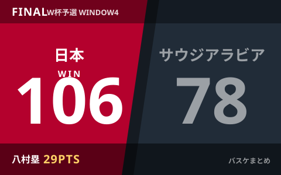

男子日本代表、サウジアラビアに106-78で快勝 八村塁29得点・河村勇輝9アシストでW杯予選Window4白星発進

男子バスケットボール日本代表（アカツキジャパン）は、日本時間8月28日未明（現地時間27日夜）、「FIBAワールドカップ2027アジア地区予選 Window4」の初戦でサウジアラビア代表とアウェーで対戦し、106-78で快勝しました。八村塁がフィールドゴール成功率84.6%という驚異的な効率で29得点をマークし、司令塔の河村勇輝も9アシストと攻撃を牽引。2次ラウンドの連戦を白星でスタートさせました。
試合経過 前半から主導権を握り最大30点超のリードに
会場はサウジアラビア・ジッダのキング・アブドゥッラー・スポーツシティ。日本は第1クォーターを33-22とリードして終えると、第2クォーターも押し切りハーフタイムは56-40の16点リード。第3クォーターでさらに突き放して90-52とし、最終スコアは106-78。終始日本がゲームをコントロールする展開で、100点ゲームでの快勝となりました。
| クォーター | 日本 | サウジアラビア |
|---|---|---|
| 第1Q終了時 | 33 | 22 |
| 前半終了時 | 56 | 40 |
| 第3Q終了時 | 90 | 52 |
| 最終 | 106 | 78 |
八村塁が29得点、河村勇輝は9アシスト
先発には河村勇輝、西田優大、馬場雄大、八村塁、ジョシュ・ホーキンソンが名を連ねました。エースの八村塁は27分42秒の出場でフィールドゴール13本中11本成功（成功率84.6%）、3ポイントも4本中3本を沈め29得点。前半だけでフィールドゴールを6本全て決める完璧な内容で試合の流れを作りました。ポイントガードの河村勇輝は得点だけでなくゲームメイクでも存在感を発揮し、9アシストをマーク。日本はチーム全体でミスを最小限に抑え、個とチームプレーがかみ合った試合運びとなりました。
| 選手 | 主なスタッツ |
|---|---|
| 八村塁（PF） | 29得点／FG11-13（84.6%）／3P3-4（75%）／4リバウンド／2アシスト／2スティール／1ブロック |
| 河村勇輝（PG） | 9アシスト |
W杯予選2次ラウンド、日本はグループFで首位争い
男子日本代表（FIBAランキング22位）は2027年カタール開催のワールドカップ本戦出場を懸けた2次ラウンドのグループFに所属し、1次ラウンドを4勝1敗で通過しています。今回のサウジアラビア戦（FIBAランキング65位）を含むWindow4は連戦のうち最初の1試合で、アウェーでの白星発進により本戦出場に向けて弾みをつけた形です。招集された14名のメンバーには八村塁のほか、富樫勇樹、渡邊雄太、齋藤拓実、富永啓生ら経験豊富な顔ぶれが揃い、これまでのWindow3強化合宿や8月の強化試合4連戦を経て仕上げてきた成果が表れた試合となりました。
次戦は8月31日、ホームでカタールと対戦
日本代表はこの4日後、8月31日にトヨタアリーナ東京でカタール代表とホームゲームに臨みます。アウェーでのサウジアラビア戦に続き、今度はホームでの一戦。ここでも勝利を重ねれば、2次ラウンド上位での折り返しがより現実的になります。放送・配信の詳細は決まり次第、当サイトでも追ってお伝えします。
Q. 次のカタール戦はいつ、どこで？
A. 8月31日にトヨタアリーナ東京（ホーム）で行われる予定です。テレビ・配信の詳細は各局の発表をご確認ください。
出典：バスケットボールキング「八村塁が驚異の効率性で29得点…日本代表がサウジアラビアに快勝、Window4を白星でスタート」／同「八村塁が“シュートミス0”で18得点…日本代表が16点リードでサウジアラビア戦を折り返す」／バスケットカウント「【ワールドカップ2027アジア予選】八村塁が圧巻の29得点、個とチームが噛み合った日本はミスを2に抑えてサウジアラビアに快勝」ほか
https://basketballking.jp/news/japan/20260828/629537.html
https://basketballking.jp/news/japan/20260828/629532.html
https://basket-count.com/article/detail/272129